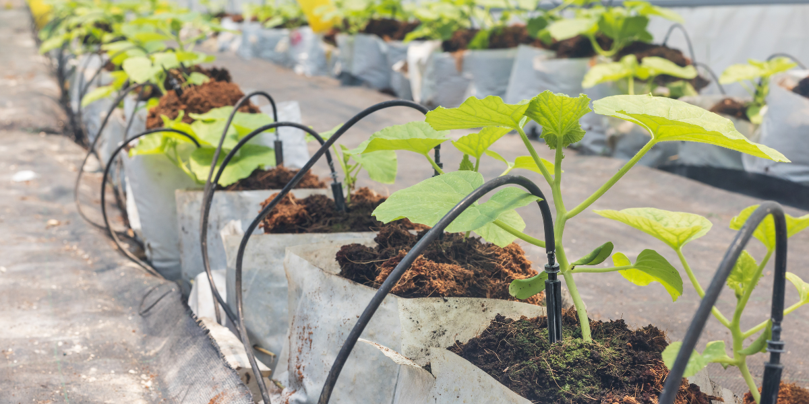

Learn essential steps for preparing your soil for optimal crop growth.

Efficient Irrigation Methods
Discover various irrigation techniques to conserve water and improve crop yield.
Crop Rotation Strategies
Learn how to implement effective crop rotation to maintain soil health and increase productivity.
Step-by-Step Guide: Organic Tomato Cultivation
Soil Preparation Prepare well-draining soil rich in organic matter. Mix in compost or well-rotted manure to improve soil structure and fertility.
Planting Sow seeds indoors 6-8 weeks before the last frost date. Transplant seedlings outdoors when soil temperatures reach 60°F (15°C).
Watering Water deeply and regularly, keeping soil consistently moist but not waterlogged. Use mulch to retain moisture and suppress weeds.
Fertilizing Apply organic fertilizer rich in phosphorus and potassium when plants start flowering. Avoid excess nitrogen to prevent lush foliage at the expense of fruit production.
Pest Management Monitor for common pests like aphids and tomato hornworms. Use organic pest control methods such as neem oil or introduce beneficial insects.
Harvesting Harvest tomatoes when they are fully colored and slightly soft to the touch. Pick regularly to encourage continued production.